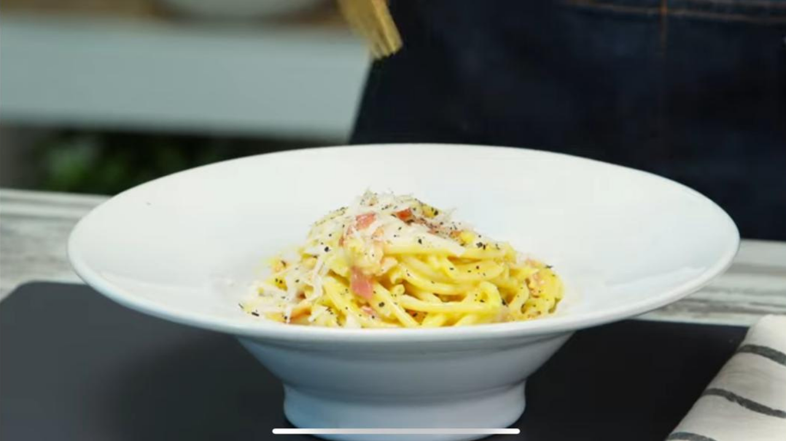

Pasta a la carbonara

Ingredientes
- 300 g de spaghetti.
- 200 g de panceta.
- 60 g de queso pecorino.
- 6 yemas de huevo.
- Pimienta negra y sal, a gusto.
Procedimiento
- Cortar la panceta en trozos grandes y rallar el queso. Separar las yemas.
- Cocinar los spaghetti. Por cada 100 g de pasta, un litro de agua y 15 g de sal. Recomendación, dejar la
pasta un minuto menos de cocción, ya que se terminará de cocinar en la salsa.
- Saltear la panceta en una sartén grande, hasta que parte de la grasa esté transparente y ligeramente
dorada. No es necesario incorporar más aceite.
- En un bowl, mezclar el queso junto a las yemas. Se puede agregar una cda del agua de cocción de la
pasta.
- Cuando la pasta esté lista, agregarla a la sartén y dar unas vueltas junto a la panceta para que tome el
sabor de la grasa.
- Retirar del fuego y agregar la mezcla de yemas.
- Mezclar muy bien, teniendo cuidado de que no cuaje el huevo. Agregar agua de cocción, si fuera
necesario, para que quede bien jugosa la salsa.
- Servir y terminar con un poco más de queso y pimienta recién molida.